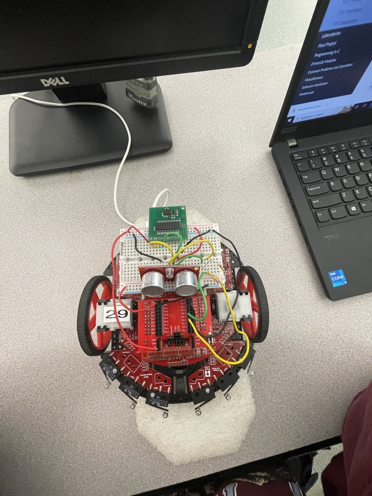

EMBEDDED / MODULE-02
Gesture RC Car
Overview

Final lab of ENGR-2350 at RPI. I replaced the potentiometers from Lab 4 with a handheld CMPS12 compass/IMU on a breadboard. Tilt the board forward and the car speeds up. Rotate it and the car turns to match. Flick it up sharply and the motors enable; flick it down and they cut off.
Wheel speed is regulated by an integral controller carried forward from Lab 4. Each wheel accumulates the error between desired and measured speed and adds a correction term, so the wheels actually hit their targets instead of just being commanded open-loop.
The tricky part was heading control. There's no absolute position reference, so the car estimates its own orientation by integrating encoder-based angle deltas every 50 ms into a relative heading. A proportional controller compares that to the desired heading from the compass and drives a differential wheel speed to correct the error. Between the I-loop on speed and the P-loop on heading, the full control scheme is effectively PID.
System Analysis
System Architecture
ARCH-001The RPI-RSLK is a differential drive robot. The CMPS12 sits on a small breadboard you hold in your hand, wired back to the car over long I2C lines. Same physical setup as Lab 4 where you held potentiometers, just with an IMU instead.
Hardware
- Speed input: CMPS12 pitch register (tilt forward/back)
- Heading input: CMPS12 compass bearing (rotate left/right)
- On/off input: CMPS12 accelerometer Z-axis (shake up/down)
- Heading feedback: wheel encoders via dead reckoning
- Speed feedback: wheel encoders, I-control carried from Lab 4
Speed Control
SPD-001Pitch angle maps to desired speed. The conversion factor determines how sensitive it is to tilt. Below 10% the car stops, above 50% it caps.
Wheel speed is regulated by the integral controller carried forward from Lab 4. Each wheel runs an independent I-loop: the desired speed sets the feedforward term, and the accumulated error between desired and measured speed drives a correction. The discrete update is:
vc(k) = vd(k) + kI × Σ ( vd(n) − vm(n) )
vd(k) is the desired speed this tick, vm(n) is the measured wheel speed, and the sum accumulates all past errors. In Lab 5 the heading controller sets the per-wheel vd values and the I-loop makes each wheel track them.
Speed Limits
- If |vd| < 10%: set vd = 0 (dead band)
- If |vd| > 50%: cap at 50%
- Pitch-to-speed mapping determined empirically per group
- Integral controller per wheel: vc(k) = vd(k) + kI × Σ error
- Each wheel runs an independent I-loop; heading controller sets the per-wheel targets
Heading Control
HDG-001The compass bearing on the handheld board is the setpoint. The car estimates its own heading from encoder counts accumulated every 50 ms. The error between the two drives a differential speed that speeds up one wheel and slows the other until they match.
Control Parameters
- Heading error wrapped to [-180°, 180°] to handle periodicity
- Δv = kPh × εh, capped at ±20%
- vl = vd - Δv, vr = vd + Δv
- Encoder counters reset each loop; only the segment delta feeds Δθ
- Encoder event direction tracked via motor direction GPIO
Gesture On/Off Control
GES-001Moving the board sharply up or down spikes the Z-axis accelerometer. The threshold was found by printing raw values and physically moving the board to see what the peaks looked like. The car starts disabled; a quick upward flick enables it, a quick downward flick kills it.
State Machine
- Startup: Disabled state, RGB LED red
- Large upward Z acceleration: LED green, 1 s delay, then Enabled
- Large downward Z acceleration: LED red, 1 s delay, then Disabled
- During 1 s delay: all CMPS12 outputs ignored (masks deceleration artifact)
Heading Calculation from Encoders
Every 50 ms the control loop calculates how much the car rotated based on the encoder counts from each wheel during that segment. The math models the path as a circular arc, which holds as long as the loop is fast enough relative to the car's motion:
Δθ = (C / a) × (nL - nR)
C converts encoder counts to distance (derived in an earlier lab), a is the wheelbase, and nL, nR are signed counts for the segment: forward pulses add, reverse pulses subtract. Result is in radians.
Each Δθ gets added to the accumulated relative heading:
hrm(k) = hrm(k-1) + Δθ(k)
The counters reset to zero after each calculation so the next iteration only sees motion since the last sample. The accumulated heading is kept in [0°, 360°] by adding or subtracting 360° at the boundaries.
Direction Tracking
Reverse pulses need to subtract from the count, so the counter variables have to be int32_t. Using uint32_t wraps around on reverse and corrupts the heading estimate. Direction is tracked from the motor direction GPIO, which the control loop already sets.
Angle-Based Turn Control
Differential Speed
Δv offsets each wheel equally in opposite directions around the desired speed:
vl = vd - Δv vr = vd + Δv
Proportional Control
The heading error feeds straight into the P controller to produce Δv:
Δv(k) = kPh × εh(k)
Tuned by starting low and increasing until the car started hunting, then backing off. Too low and it barely reacts; too high and it oscillates continuously around the target.
Angle Wrapping
Heading wraps at 360°, so a naive subtraction gives the wrong direction. An error of +270° is really -90° since that's the shorter path. Clamping to [-180°, 180°] fixes this before the error hits the controller:
εh = θdesired - hrm
if εh > 180: subtract 360
if εh < -180: add 360
Wrap the error only. The raw heading values stay untouched.
Control Specifications
| Parameter | Value | Notes |
|---|---|---|
| Max |Δv| | 20% | Clamp differential speed |
| Min |vd| | 10% | Set to 0 if below (dead band) |
| Max |vd| | 50% | Cap desired speed |
| Min PWM duty | 10% | Hardware floor |
| Max PWM duty | 90% | Hardware ceiling |
| Control loop period | 50 ms | Timer interrupt driven |
| I2C address (CMPS12) | 0x60 | Fixed by device |
Engineering Notes
Heading Control
Proportional control on heading error. Derivative control was optional per the lab spec and wasn't needed. P-control was sufficient for stable heading tracking.
Resetting Encoder Counts Each Loop
Resetting per-segment encoder counters to zero after each Δθ calculation isolates each loop iteration's contribution to the heading. Without the reset, the accumulated count would cause Δθ to grow unboundedly instead of tracking only the motion since the last sample.
Gesture Delay
The 1-second ignore window after a gesture trigger exists because moving the board quickly up produces a large positive acceleration followed immediately by a large negative deceleration. Without the delay, the deceleration would immediately re-trigger the opposite state transition.
Signed Encoder Variables
Encoder counts for each segment must be int32_t so that reverse pulses decrement the count. Using uint32_t causes wrap-around on reverse motion and produces incorrect Δθ values. The running total (if kept separately) also needs to be signed.
Heading Units
Δθ from the encoder math comes out in radians. The CMPS12 compass bearing is in tenths of degrees (0 to 3600). Before computing the error, both values need to be in the same units. Converting Δθ to tenths of degrees and keeping everything in that domain avoids floating-point issues on the MSP432.
I2C Reads
The CMPS12 is read over I2C at address 0x60. Pitch, compass bearing, and accelerometer registers are all pulled each loop. Reading them in a single burst rather than separate transactions cuts down on bus time, which matters at 50 ms.
I Gain (wheel speed)
kI was tuned in Lab 4 before this lab started. A value too high causes the accumulated error to overcorrect and the wheels oscillate in speed. Too low and the wheels don't reach the target, which shows up as heading drift since the heading controller assumes the wheels are actually hitting their speed targets.
P Gain (heading)
Started very low and cranked it up until the car began oscillating, then backed off. The window between "barely responds" and "hunts constantly" was pretty narrow. Once it was in that range, small adjustments made a noticeable difference in how cleanly it settled.
Gesture Threshold
Printed all three accelerometer axes with the car sitting still, then moved the board sharply in each direction and watched the peaks. The threshold was set somewhere above the idle noise and below the obvious flick peak.
Print raw sensor values before writing any control logic. Much easier to pick a threshold when you can see what the sensor is actually outputting.